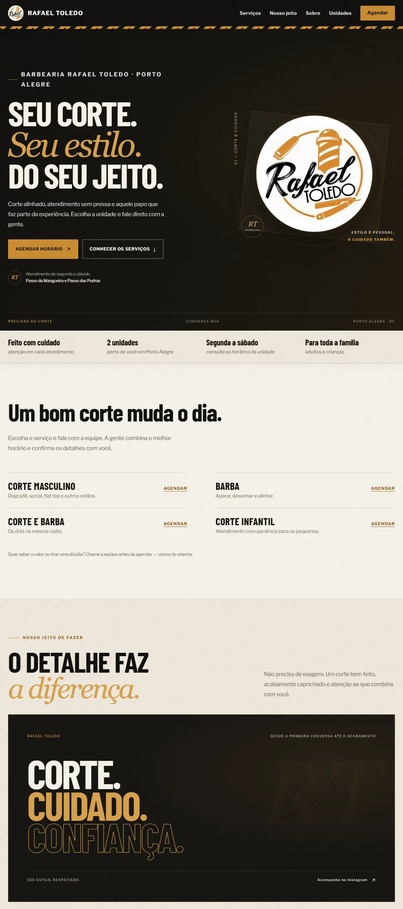
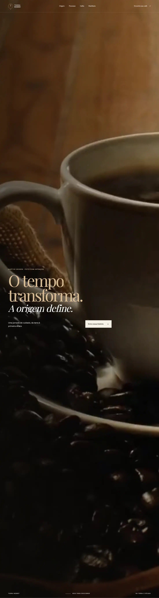
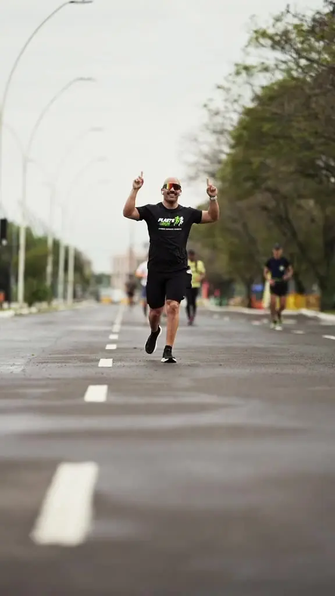
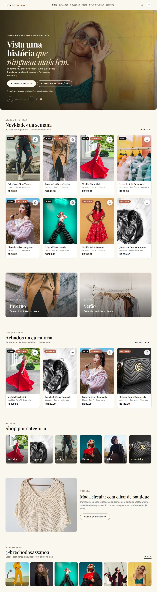
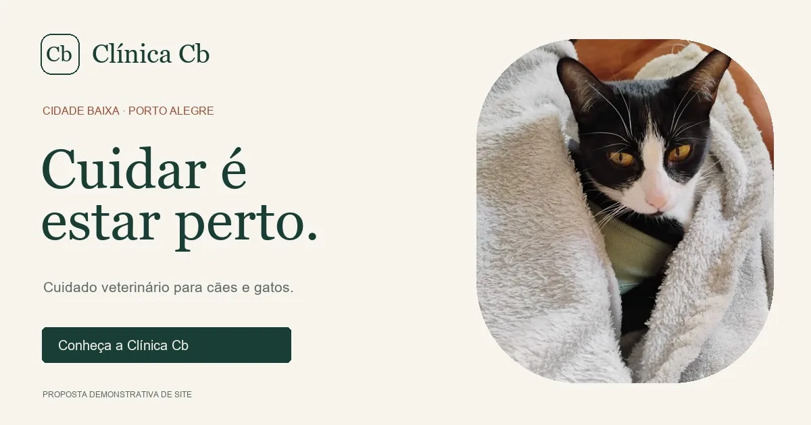
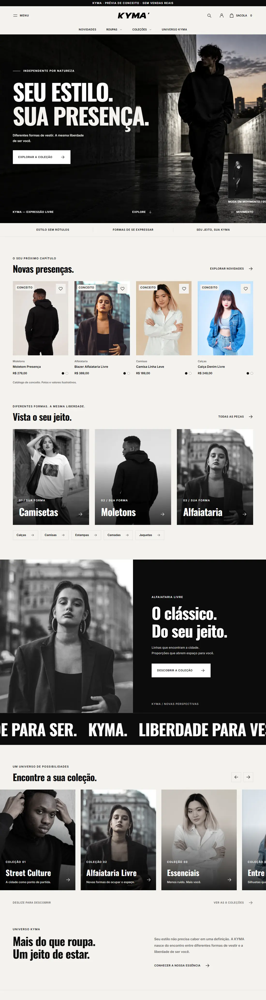

Barbearia · Porto AlegreBarbearia Rafael Toledo
Serviços, informações sobre as duas unidades e um caminho direto para agendar pelo WhatsApp.
Ver projetoSite.on · projetos
Uma seleção de projetos publicados e conceitos. Cada página mostra o trabalho e o que foi desenvolvido.

Barbearia · Porto AlegreServiços, informações sobre as duas unidades e um caminho direto para agendar pelo WhatsApp.
Ver projeto
Café de origemUma apresentação de cafés de origem, com narrativa sobre o tempo, o cuidado e o processo.
Ver projeto
Treinamento personalizadoApresentação de consultoria online e treinamento presencial com planejamento individualizado.
Ver projeto
Brechó boutiqueVitrine de peças únicas, com coleções, categorias e acesso à compra pelo WhatsApp.
Ver projeto
Clínica veterinária · Proposta demonstrativaUma proposta de site para organizar serviços, horários e contato de uma clínica veterinária.
Ver projeto
Moda independente · ConceitoUma experiência de marca para moda independente. Projeto conceitual, sem vendas reais.
Ver projetoAs imagens mostram os sites e projetos indicados. Clínica CB é uma proposta demonstrativa; KYMA é uma prévia conceitual sem vendas reais.
Tem um projeto em mente?
Me conte o que você faz e o que gostaria de apresentar.
Chamar Gustavo no WhatsApp